Master Command Hub & Visual Screen Directory
Official 25-Screen Suite for GACC Decree 248/249 durian export value-chain orchestration: packhouse workflow, 5-gate quarantine audit, air-gapped cryptographic vaults, and ASEAN trade corridor telematics.
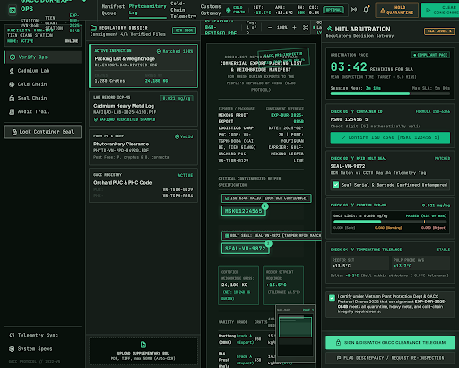
Screen 01 index.htmlPackhouse Ops Command Station
Single-site on-premise container dossier workspace for Cai Lậy. 3-step progressive workflow with document ingestion, deterministic GACC rules, and export seal.
src/workspace/container-dossier-workspace.ts
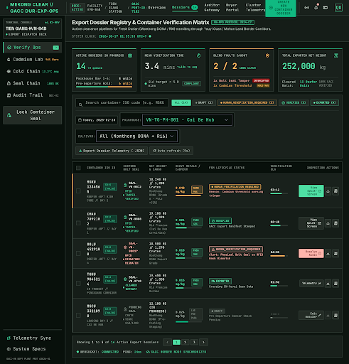
Screen 02 dossiers.htmlContainer Dossier Registry
Real-time multi-status container dossier queue, ISO 6346 validation, seal tracking, and multi-tenant isolation.
src/server/dossier-handlers.ts
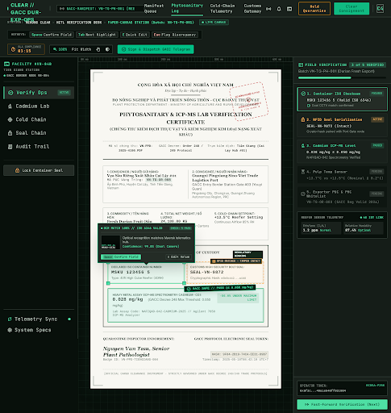
Screen 09 paper-canvas.htmlPaper-as-the-Canvas Highlighter
Bút Dạ Quang interactive canvas: visual OCR field bounding boxes with dual-lock verification on physical phytosanitary certificates.
src/extraction/visual-highlighter.ts
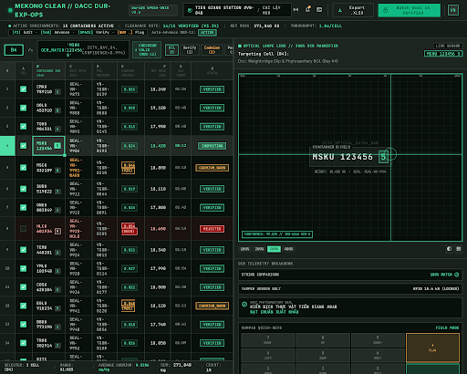
Screen 10 excel-grid.htmlExcel Speed Grid + 300% Loupe
Dense keyboard-accelerated data entry grid with arrow navigation, copy-paste shortcuts, and 300% optical inspection loupe.
src/server/static-ui.ts
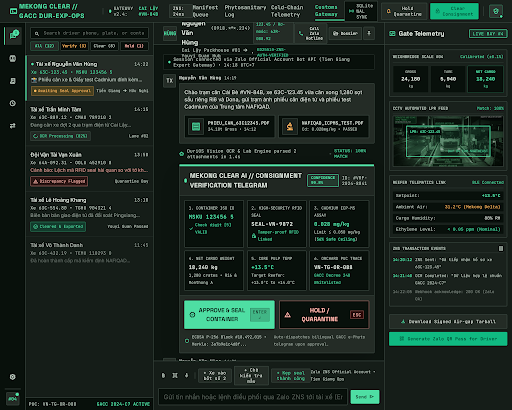
Screen 11 zalo-bot.htmlZalo Ops Notification & OCR Relay
Field mobile chat relay for instant container alerts, OTP token verification, and automated OCR image ingestion via ZNS.
src/auth/otp-providers.ts
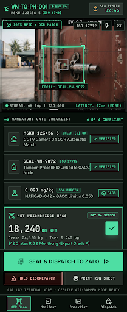
Screen 12 mobile-weighbridge.htmlMobile Weighbridge Gross/Tare Scale
High-contrast mobile terminal for truck axle weighing, net durian payload calculation, and weighing slip SHA-256 sealing.
src/domain/dossier.ts
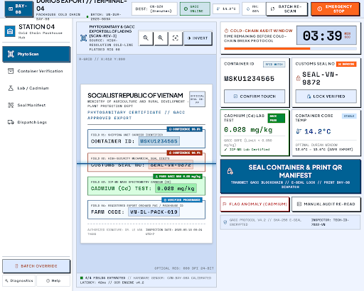
Screen 13 field-proven.htmlField POS Proven Offline Terminal
Daylight-optimized outdoor POS terminal: instant orchard disbursement receipts, biometric stamp, and offline queueing.
src/rules/temperature-rules.ts
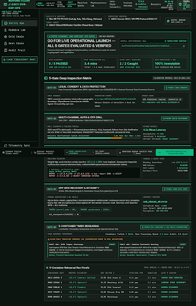
Screen 03 auditor.htmlField Auditor 5-Gate Checklist
Strict 5-Gate evaluation: Temperature cold-chain (-18C to +13C), Heavy metals (Cadmium <0.05mg/kg), Phytosanitary cert, Lab accredited.
src/rules/gacc-decree-checker.ts
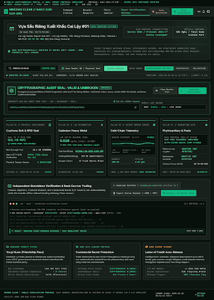
Screen 04 buyer.htmlBuyer Cryptographic Portal
Zero-knowledge trade validation proofs, blind pricing concealment, QR validation, and direct GACC electronic phytosanitary notary.
src/sharing/share-grant-service.ts
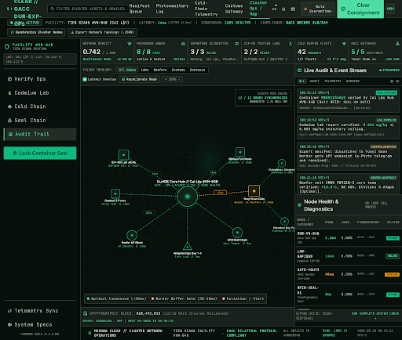
Screen 05 cluster.htmlMekong Delta Cluster Ops Room
Geographic radar topology, 12-packhouse node heartbeat telemetry, 42 active reefer live IoT streams across Tiền Giang & Bến Tre.
src/storage/sqlite-client.ts
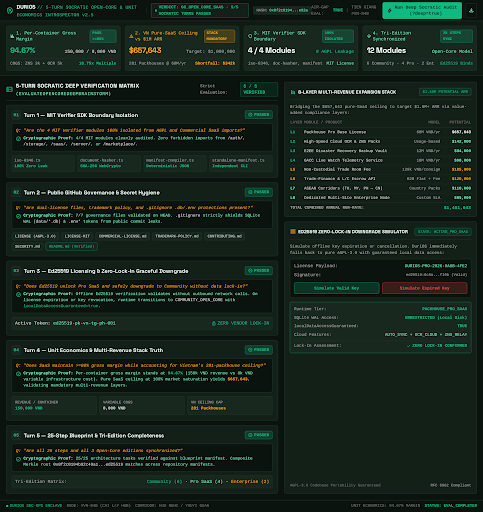
Screen 14 socratic-introspector.html5-Turn Socratic Introspector
Automated 5-turn dialectic evaluation of open-core thesis, 94.67% container gross margin proof, and MIT-boundary clean room guarantee.
src/saas/open-core-deep-introspector.ts
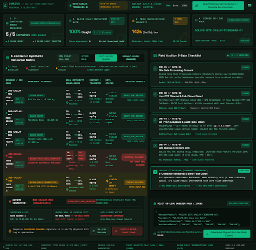
Screen 15 rehearsal-command.htmlCai Lậy Rehearsal & Fault Center
1-Click full Cai Lậy dress rehearsal seeder, automated blind fault injection (mismatched seal, Cadimi tampered), and hot-backup recovery.
src/server/ecosystem-rehearsal-handler.ts
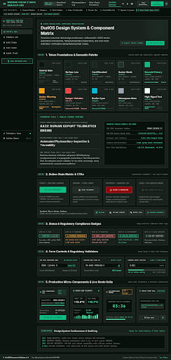
Screen 08 styleguide.htmlLiving Style Guide & Design Tokens
2027 Enterprise B2B Supply-Chain UX standards: typography hierarchy, daylight/emerald ops color palettes, and accessible component specs.
site/public/durios-design-system.css
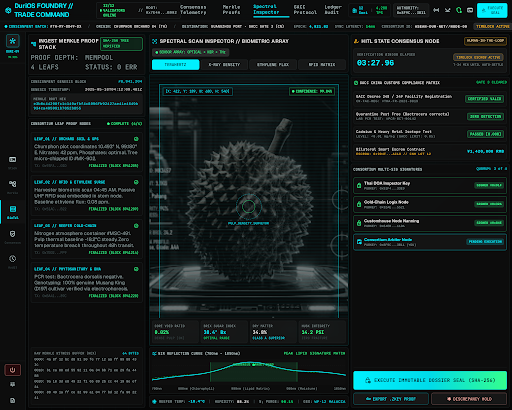
Screen 17 foundry.htmlPalantir Foundry Security Engine
Entity-level ACL matrix, tamper-evident immutable audit trails, cryptographic key rotation, and multi-tenant boundary isolation.
src/auth/sqlite-auth-service.ts
 Screen 18
security-vault.html
Screen 18
security-vault.html
Sovereign Air-Gapped Security Vault
Zero remote cloud dependency: local SQLite WAL database encryption, Ed25519 asymmetric signatures, and SHA-256 Merkle chain integrity.
src/storage/schema-migrations-pilot.ts
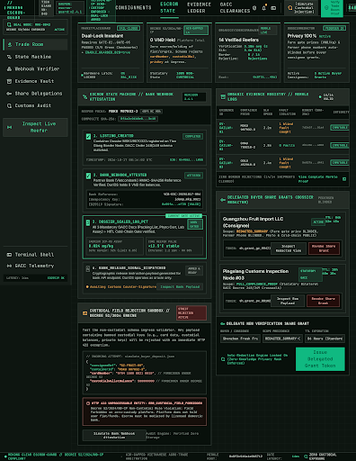
Screen 19 organic-escrow-guard.htmlNon-Custodial Escrow Guard
Decree 52/2024/NĐ-CP compliant non-custodial milestone release: dual-lock biometric sign-off without ever taking custody of merchant funds.
src/server/marketplace-escrow-handler.ts
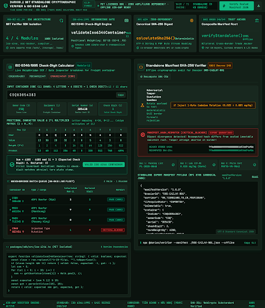
Screen 16 mit-verifier-lab.htmlStandalone MIT Verifier Lab
Offline ISO 6346 check-digit validator and SHA-256 manifest integrity lab: detects 1-byte Cadimi mutation with MANIFEST_HASH_MISMATCH.
src/server/open-core-verifier-handler.ts
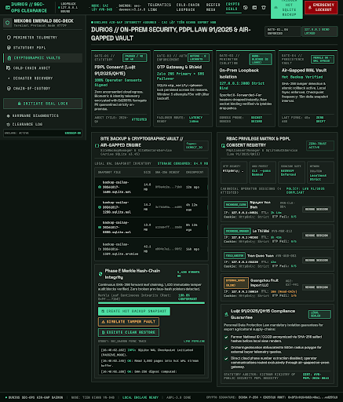
Screen 24 cloud-ocr-vault.htmlCloud OCR & 10-Year WORM Vault
10-Year WORM (Write Once, Read Many) compliance retention in S3/R2 with SHA-256 integrity trees; 150K VND fee vs 8K COGS model.
src/storage/file-storage-service.ts
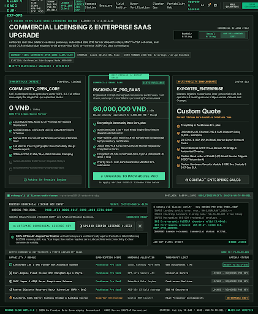
Screen 25 ed25519-downgrade-simulator.htmlEd25519 Downgrade Simulator
Zero-data-loss invariant proof: simulates enterprise subscription expiry, 7-day grace period, and seamless transition to Community Edition.
src/server/saas-status-handler.ts
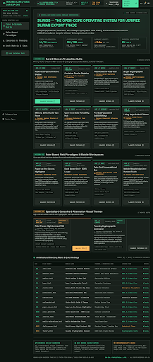
Screen 00 gallery.htmlMaster Command Hub & Directory
2027 Executive Control Tower: interactive 4-pillar directory, live telemetry HUD, instant search, and synchronized 25-screen matrix.
src/server/stitch-static-handler.ts
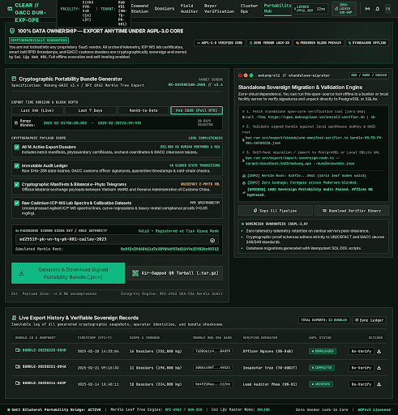
Screen 06 portability.htmlData Portability & Export Hub
Signed RFC-6962 workspace export bundle, HMAC-SHA256 integrity proofs, and standalone offline CLI binary generator.
src/server/open-core-portability-handler.ts
 Screen 07
upgrade.html
Screen 07
upgrade.html
Pro SaaS Upgrade & Licensing
Transparent tiered monetization: Open-Core Community (Free, local SQLite) -> Pro SaaS (Cloud sync, Zalo relay, multi-market packs).
src/saas/open-core-deep-introspector.ts
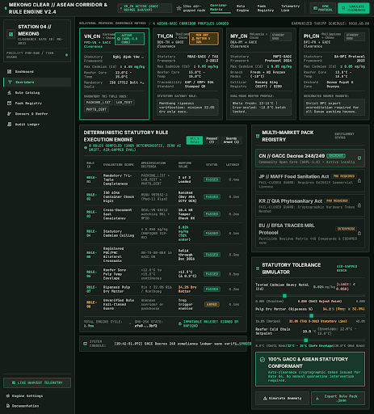
Screen 22 corridors.htmlASEAN Durian Trade Corridors
Export corridor telemetry across VN->CN (Huu Nghi / Tan Thanh), MY->CN, TH->CN, PH->CN with tariff codes and cold-chain checkpoints.
src/domain/export-corridor.ts
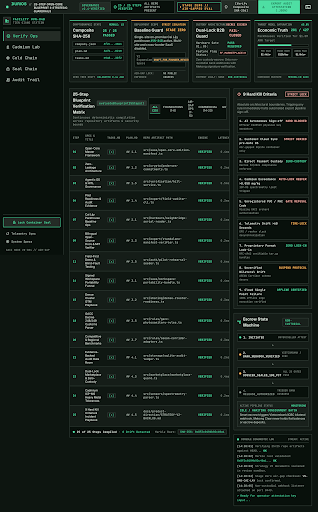
Screen 23 blueprint.html25-Step Open-Core Blueprint
Canonical 25-step architecture roadmap, task breakdown with acceptance criteria, and SHA-256 composite blueprint hash.
src/server/open-core-blueprint-handler.ts
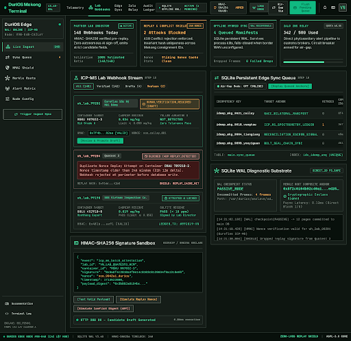
Screen 20 webhook-sync-queue.htmlPartner Lab Webhook & Edge Sync
Partner lab HMAC-signed webhook relay, replay protection, offline SQLite sync queue, and resilient backoff retry mechanism.
src/saas/hybrid-edge-sync-queue.ts
No matching screens found
Try adjusting your filter keyword or click 'All 25 Screens'.